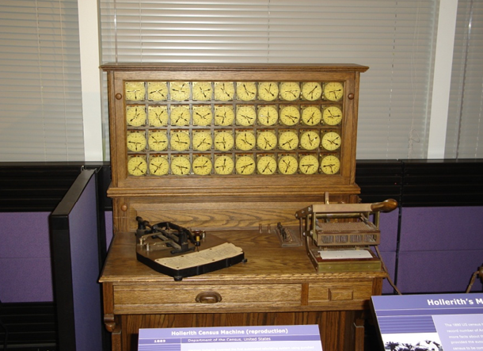

La computadora no es un invento de una persona en particular , si no, un resultado de la evolución de ideas de muchas personas. A continuación mostraremos algunos eventos importantes en su historia:
El primer precursor de las computadoras es el ábaco, una herramienta que mediante barras paralelas y bolillas movibles, permitía efectuar operaciones aritméticas como sumas, restas, multiplicaciones y divisiones.
1642 el científico Blaise Pascal inventa una máquina de sumar llamada pascalina que funcionaba mediante ruedas dentadas
1801 Joseph Jacquard crea tarjetas perforadas, que permitían controlar el funcionamiento de telares, idea que sería utilizada posteriormente para las primeras computadoras.
1833 Charles Babbage diseña la primer computadora llamada maquina analítica que podía realizar las cuatro operaciones básicas, almacenar datos y mostrar resultados, pero debido a las limitaciones tecnológicas de su época, no pudo hacer realidad su idea.
1848 George Boole inventa el algebra binaria booleana.
1890 Herman Hollerith inventa una máquina tabuladora basada en la lógica de boole utilizando tarjetas perforadas y algunas ideas de Babbage.
1936 el matemático Alan Turing formaliza los conceptos de algoritmos y de máquina de Turing, fundamentos claves para la computación moderna.
1944 surge la computadora electromecánica Mark 1 construida en Hardvard. Era controlada por programas y leía datos mediante cintas perforadas.
A su vez en estos años el ingeniero alemán Konrad Zuse, crea la computadora Z1 (seguida posteriormente por Z2, Z3 y Z4) que fueron más pequeñas y baratas que la Mark 1
1946 se pone en funcionamiento la ENIAC, que funcionaba con válvulas y fue la primera computadora de propósito general.
1947 en los laboratorios Bell se crea el transistor.
1950 Kathleen Booth crea el lenguaje ensamblador para hacer operaciones en la computadora sin necesidad de cambiar cables de conexión, sino a través de tarjetas perforadas. A finales de este año comienza a desarrollarse el lenguaje de programación
1951 comienza operar la EDVAC de John Von Neumann, que tuvo el primer programa diseñado para ser almacenado.
1953 IBM fabrica su primer computadora a escala industrial, la IBM 650, que utilizaba el lenguaje ensamblador para la programación, y reemplazaba la utilización de válvulas con transistores lo que marca el inicio de la segunda generación de computadoras.
1957 Jack Kilby construye el primer circuito integrado.
1964 aparece la IBM 360 lo que marca la tercer generación de computadoras, caracterizada por la utilización de circuitos integrados.
1969 se crea el sistema operativo UNICS posteriormente renombrado Unix.
1970 aparece la primera memoria dinámica RAM la i1103 con capacidad de 1024 bits.
1971 Intel presenta el primer microprocesador comercial, el Intel 4004. En este año aparecen además el primer programa de correo electrónico y el protocolo FTP protocolo de transferencia de archivos en internet
1972 aparecen los disquetes
1974 se crea el sistema Ethernet para conectar computadoras con un cable único en una LAN
1977 Apple presenta el primer computador personal que se vende a gran escala, el Apple II
1981 aparece en el mercado el IBM PC que fue un éxito comercial. En este año también se define el protocolo TCP/IP
1982 Microsoft lanza el sistema operático MS-DOS.
1983 ARPANET se separa de la red militar que la originó , convirtiéndose en el origen de internet. En este año además se publica el lenguaje C++.
1984 se crean los CD-Roms
1985 Microsoft presenta Windows 1.0
1990 se crea el World Wide Web (WWW) para interactuar con internet. En este año también surge el lenguaje Python. También se crean las bases de HTTP, el lenguaje HTML y el concepto de URL.
1991 se comienza a desarrollar Linux.
1992 se crea el primer navegador gráfico.
1993 se presenta el primer PDA, Newton.
1997 se lanza Netscape navigator 2.0, el primer navegador con soporte a Javascript.
Hasta la actualidad, las computadoras fueron reduciéndose de tamaño, mejorando su potencia y añadiendo nuevas funcionalidades, mejorando constantemente las tecnologías que fueron surgiendo en su historia. Hoy en día gran parte de la población tiene acceso a algún tipo de computadora, lo que facilita al acceso de información y comunicación entre personas.